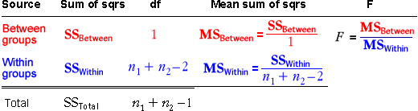
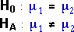
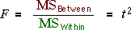
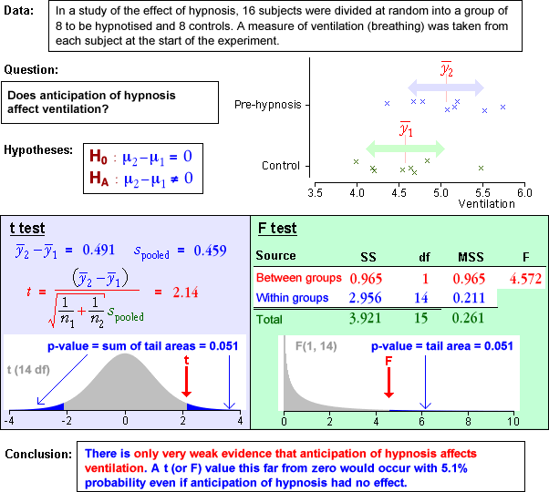

Anova table
We now extend the sum of squares table with columns containing mean sums of squares and an F ratio.

The F ratio in this table can be used to test whether the regression slope is zero. In this special GLM with a single indicator variable, it is therefore used to test whether two group means are equal,

Equivalence of anova and t tests
We explained earlier that the F ratio for a GLM with a single explanatory variable is the square of the corresponding t statistic for testing whether the regression slope is zero (a full proof takes a bit of algebra!).

Since the F and t statistics are so closely related, the probability of an 'extreme' value of one is equal to the corresponding probability of an 'extreme' value of the other.
The p-values for the two tests are therefore identical.
Examples
For the data sets below, we have performed both a t-test and an F-test for equality of the two group means. Observe that:
